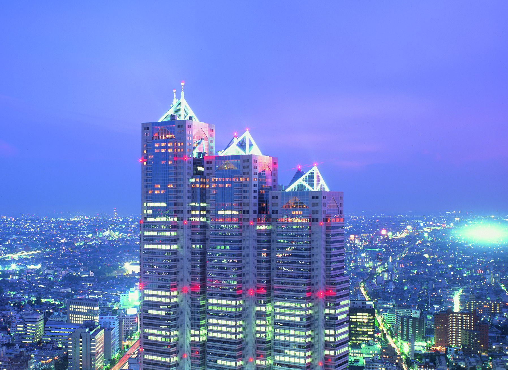
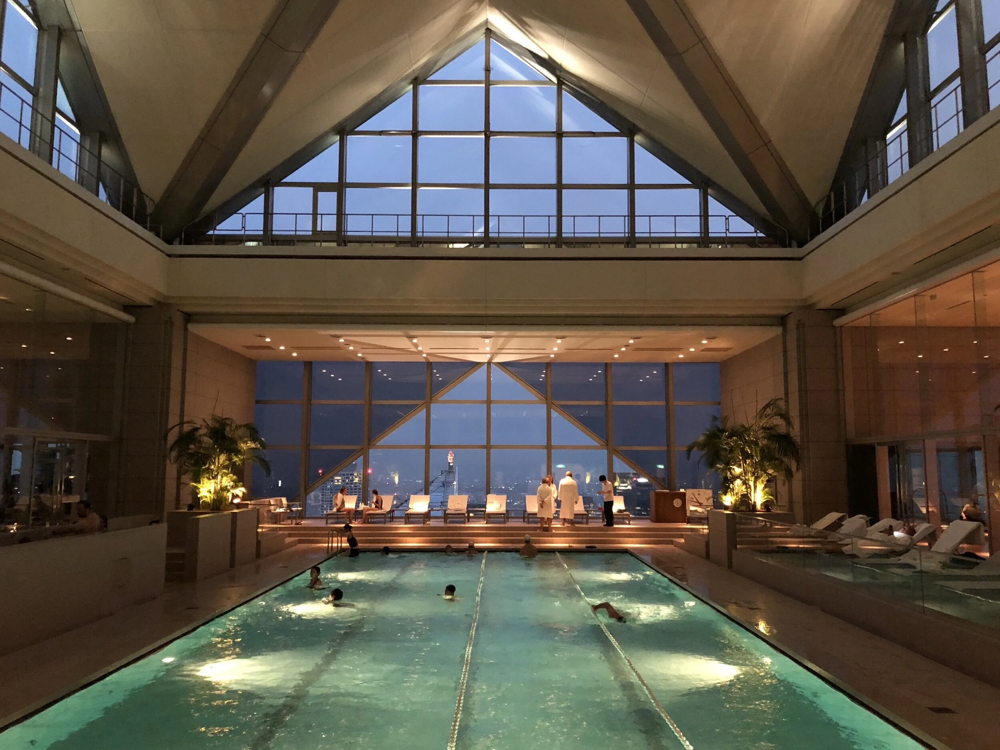
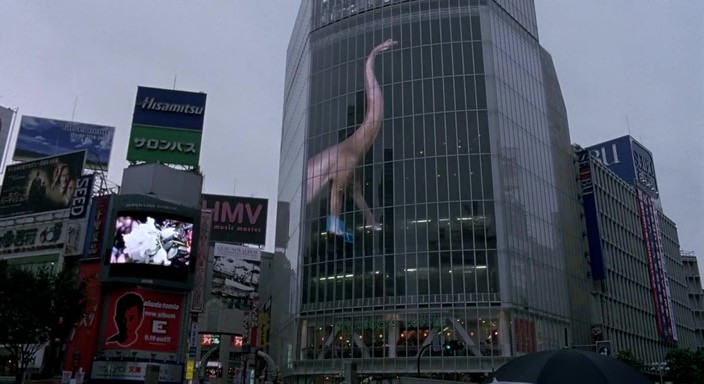
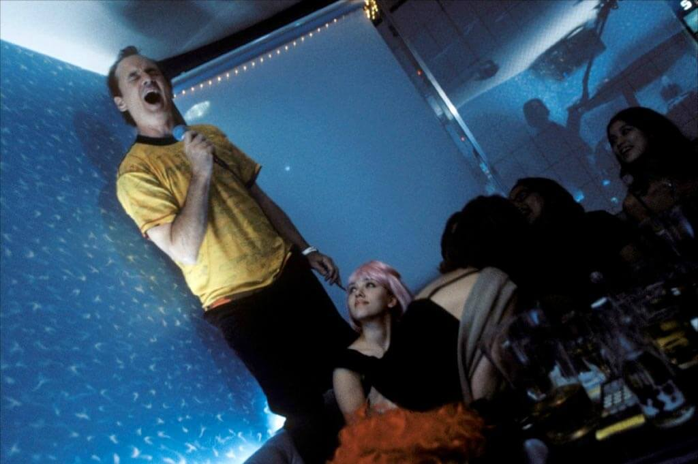
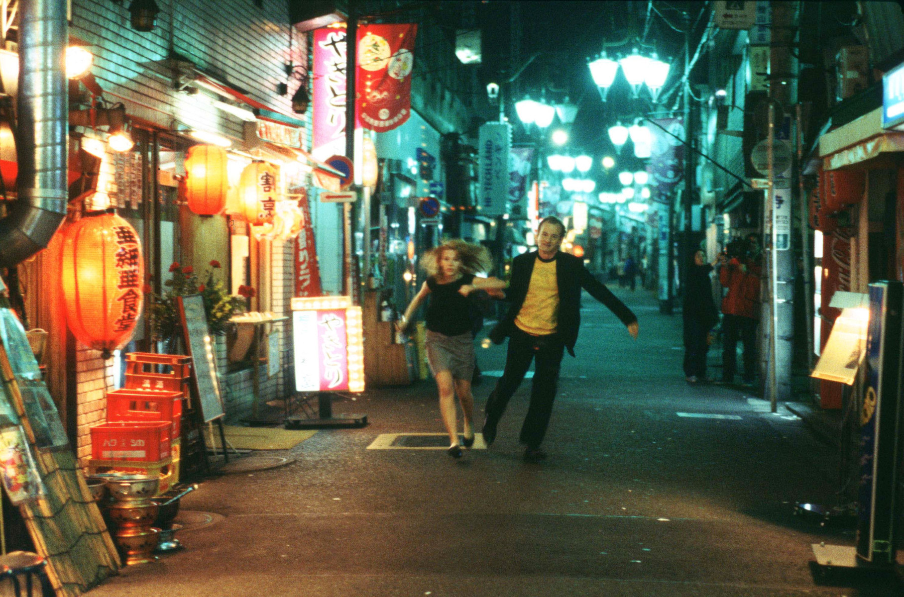
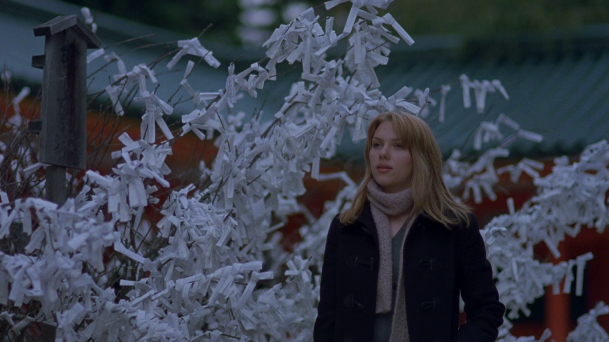
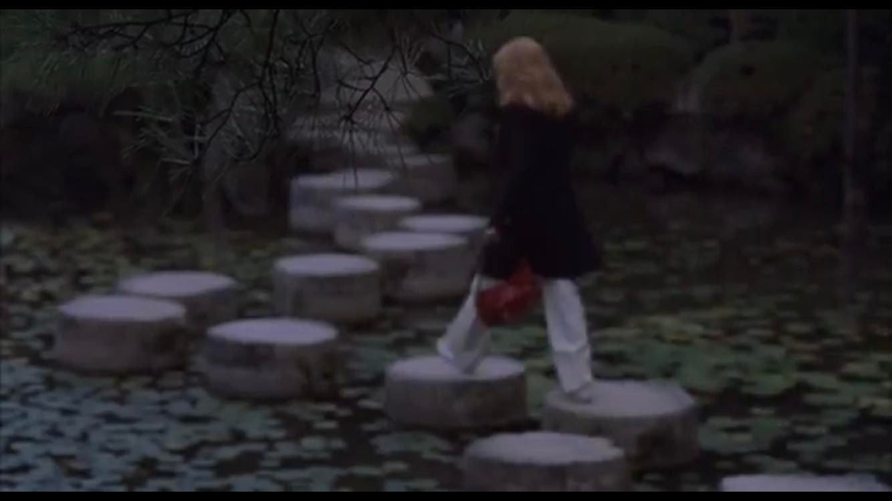

Locaciones de Lost in Translation
Hotel Park Hyatt Tokyo (Shinjuku)
Es el corazón de la película. Ubicado en los pisos superiores de la Shinjuku Park Tower, este hotel de lujo es donde Bob y Charlotte pasan sus noches de insomnio.
Dentro de este mítico hotel podemos encontrar lugares destacables como el "New York Park", con vistas panorámicas de la ciudad, donde nuestros personajes se conocen y compartes sus primeras charlas sobre el whisky Suntory, o la piscina, en el piso 47, donde Bob intenta nadar para combatir su melancolía.


El Cruce de Shibuya
Probablemente la locación más famosa. Es donde Charlotte camina bajo la lluvia con un paraguas transparente, maravillada por la marea humana y las pantallas gigantes de neón (incluyendo la famosa pantalla con el dinosaurio). Representa visualmente la escala masiva de la ciudad frente a la soledad del individuo.

Karaoke Kan
Es el lugar donde Bob y Charlotte pasan una noche inolvidable, cantando juntos en un karaoke. Esta locación simboliza la conexión emocional entre los personajes, a pesar de su soledad en la ciudad. Está ubicado en este edificio, especificamente en las habitaciones 601 y 602.

Kabukicho (Distrito de Shinjuku)
Es el barrio "rojo" y de entretenimiento de Tokio. Las escenas del taxi al principio de la película, con los carteles luminosos saturados y la canción Girls de Death in Vegas, se grabaron aquí. Es la entrada visual a ese mundo extraño y vibrante que Bob atraviesa tras su llegada.

Santuario Heian y Templo Nanzenji (Kioto)
Charlotte viaja en el tren bala buscando un momento de paz. Visita lugares como el Santuario Heian, donde camina por sus puentes de madera sobre el estanque, y el Templo Nanzenji, donde observa una boda tradicional japonesa, contrastando con el caos de Tokio.

